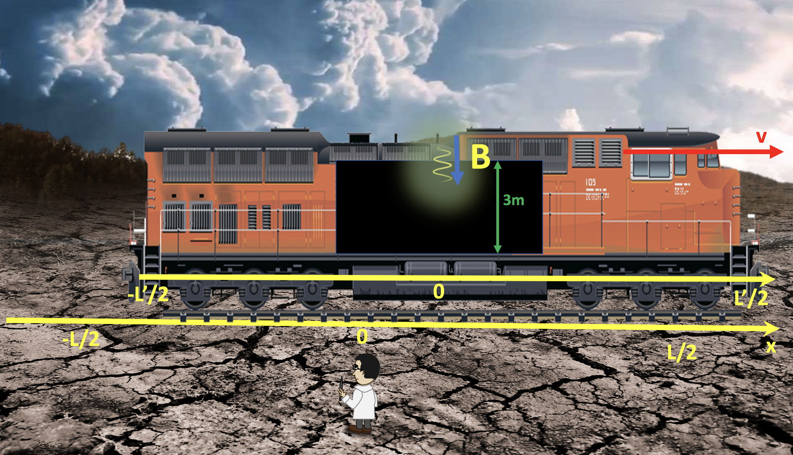

Forrige side🙂 🙁Eksempel 1PADLET

Et speil i taket gjør at lysstrålen reflekteres tilbake igjen når den treffer taket. Dette kalles event B. I labsystemet, så har toget beveget seg en liten strekning til høyre for origo på x-aksen. Merk at x’-aksen sitter fast på toget og flytter seg med toget.